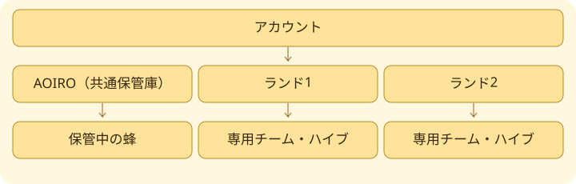
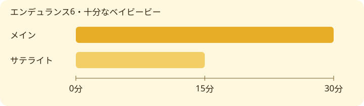
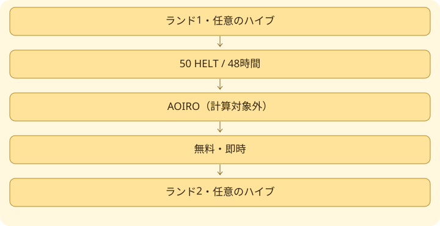
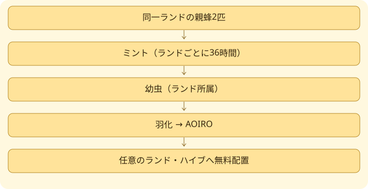

01 基本構造
ランドは複数アカウント相当の運用を一つのアカウントで行う仕組みです。有料アイテムで、購入しなければ所持していません。AOIROは全員が持つ特殊な保管庫です。

各ランドに独立したチームとハイブを構成します。ハイブ1をメインハイブ、ハイブ2以降をサテライトハイブと呼びます。
| 項目 | 管理単位 |
|---|---|
| チーム・エンデュランス | ランド |
| エナジー・レベル・蜂の所属 | ハイブ |
| AOIRO | アカウント共通 |
02 チームと蜂
メイン蜂1匹とサポート蜂最大2匹でチームを編成します。同一ランド内の全ハイブで共通です。
| 蜂 | 今回のポイント |
|---|---|
| クリーナー | 稼ぎに直結 |
| ナース | サポートによるエンデュランス上昇 |
| ベンチレーター | 所持数によるエンデュランス上昇。編成不要 |
ベンチレーターの効果はランド内の全ハイブの合計数 × 0.05。ランド1に10匹と5匹、ランド2に3匹なら、それぞれ +0.75、+0.15 です。
03 エナジー
蜂の数やレアリティによってハイブごとのエナジーが決まります。ハイブレベルによる上限は レベル × 10 です。本来15エナジーでもLv.1なら10、Lv.2なら15になります。
| 蜂の数（到達数） | 基本エナジー |
|---|---|
| 1 | 1 |
| 3 | 2 |
| 7 | 4 |
| 13 | 7 |
| 21 | 11 |
| 30 | 15 |
| レアリティ | 追加エナジー |
|---|---|
| Basic | 0 |
| Advanced | 1 |
| Rare | 2 |
| Elite | 3 |
| Supreme | 6 |
上の換算表は先の解説草案に基づく参考値です。公開前に公式資料・現行ゲームで照合してください。
幼虫
幼虫はランド単位で所属します。培養中の幼虫による追加エナジーは以下の参考値です。現在の適用状況・反映先は要確認です。
| 培養中の幼虫 | 追加エナジー |
|---|---|
| 5 | 1 |
| 7 | 2 |
| 10 | 3 |
| 13 | 4 |
| 15 | 5 |
04 エンデュランス
ランド内で共通のエナジー消化速度です。
消化量＝活動時間 × エンデュランス ÷ 6。実際の消化は1分ごとです。
インペリアルハイブ
特殊な条件を満たすエンデミックビーを格納する施設で、現在は各ランドのメインハイブのみが保有します。エンデュランス上限の引き上げに関係します。Tier1〜4は所属ランド、Tier5は全ランドに適用されるとされています。現行の適用条件は要確認です。
05 ベイビービーと同時消化
ベイビービーはチーム編成用の蜂とは別のアイテムです。サテライトハイブの同時消化に必要で、配置数によって同時消化できる量が変わります。メインハイブには不要です。

十分なベイビービーがある場合、30と15エナジーをエンデュランス6で同時消化すると、30分で合計45エナジーを消化できます。
| 種類 | ランド内付け替え | 別ランドへの移動 |
|---|---|---|
| CLASSIC | 可能 | 不可 |
| OG | 可能 | AOIRO経由で可能 |
| GENESIS | 可能 | AOIRO経由で可能 |
必要数の詳細は公式のベイビービー表を参照してください。不足時の消化挙動は要確認です。
06 蜂の移動
同一ランド内ではハイブ間を無料で直接移動できます。48時間のクールタイムと移動中の計算対象外という扱いは未検証です。

| 経路 | 費用 | 時間 |
|---|---|---|
| 同一ランド内 | 無料 | 48時間（仮） |
| ハイブ → AOIRO | 50 HELT | 48時間 |
| AOIRO → 任意のハイブ | 無料 | 即時 |
AOIROへの転送中および保管中の蜂はエナジー・エンデュランスの計算対象外です。
07 ミントと羽化
同一ランド内の蜂2匹を使って幼虫をミントします。クールタイムはランドごとに36時間。幼虫はミントしたランドに所属し、羽化した蜂はAOIROに入ります。

羽化した蜂は任意のランド・ハイブへ無料で即時配置できます。ミントの費用や抽選などは本ガイドの対象外です。
08 消化時間シミュレーター
十分なベイビービーがあり、同一ランド内で全ハイブを並行消化できる場合の理論値です。
ハイブレベル、ベイビービー不足、実際の1分刻みの処理は自動判定しません。
09 参考資料と未確認事項
本ページは非公式ガイドです。ランド未購入時の運用、同一ランド内の転送時間と計算上の扱い、幼虫の反映先、ボーナス計算順序、インペリアルハイブの現行条件、ベイビービーの転送費用・時間は要確認です。